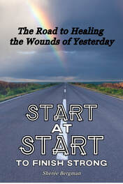
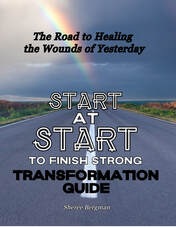
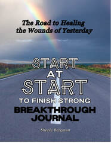

Start at Start to Finish Strong
The Road to Healing the Wounds of Yesterday
View on Amazon ↗Support for Your Journey
Books, music, and tools for understanding, healing, and moving forward.
Words of Hope

The Road to Healing the Wounds of Yesterday
View on Amazon ↗
Transformation Guide
View on Amazon ↗
Breakthrough Journal
View on Amazon ↗Explore Sherée’s author website
Visit Author Website ↗A Moment to Breathe
Explore music by Sherée’s son on PolarisFrequency.
Listen on YouTube ↗Understanding & Connection
Explore Sherée’s companion books for reflection and personal growth.
Browse the books ↑Read the group’s confidentiality expectations and print a copy to sign.
Read the agreement →Hope · Healing · Healthier Tomorrows
Find understanding, support, and practical tools in a safe and welcoming community.
Join a Session